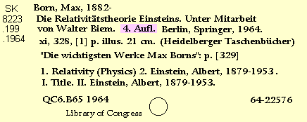

[Top]
-
Retrospective Conversions Procedural Outline
Copy:
Editions (250)

250
4. Aufl.
Accept edition statements
as they appear on copy, provided that the information is
substantially the same.
Go back to:
Titles
Continue with:
Publication
[Top]
-
Retrospective Conversions Procedural Outline
 4. Aufl.
4. Aufl.